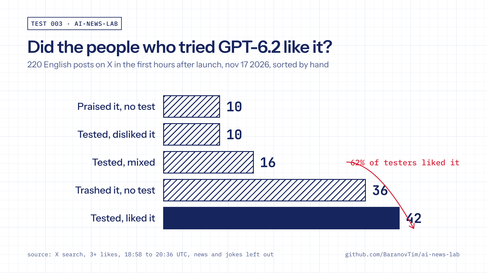

Did the people who tried GPT-6.2 like it?
Mostly yes. Of 68 posts where people showed their own test of GPT-6.2, 42 liked it and only 10 didn't. The "worst model ever" posts mostly showed no test at all, and they got about twice the likes.
62% of testers liked it
What I tested
OpenAI released GPT-6.2 Astra and Sol on Nov 17. Within an hour my timeline said it was the worst model OpenAI ever shipped. I wanted to know if that came from people who used it or from people repeating each other.
An AI agent pulled every English post on X that named GPT-6.2 (no replies, no reposts, at least 3 likes) from 18:58 to 20:36 UTC, about 1 to 2.5 hours after launch. That's 220 posts. Each one went into one group:
| Group | Rule |
|---|---|
| Tested (liked / mixed / disliked) | The author shows or describes their own run: a demo, a timing, a cost, a benchmark they ran, early-access use |
| Trashed it / praised it, no test | A verdict with no own test shown, including repeating other people's reviews or someone else's benchmark |
| Safety | About the system card, alignment or cyber testing |
| News | Launch info, prices, plain benchmark numbers, "now available in", ads |
| Other | Jokes, questions, "where is my access", posts about the drama |
I wanted to test it hands-on in ChatGPT too, but it's only for paid plans and my account is on Free.
Results
| Group | Posts | Likes |
|---|---|---|
| Tested, liked it | 42 | 1,211 |
| Tested, mixed | 16 | 389 |
| Tested, disliked it | 10 | 240 |
| Trashed it, no test | 36 | 2,612 |
| Praised it, no test | 10 | 141 |
| Safety | 9 | 777 |
| News | 55 | 1,229 |
| Other | 42 | 765 |
36 of the 46 negative verdicts (78%) came with no test. The most liked post in the set (1,047 likes) called it "the worst release since the GPT-5 disaster" without showing a run. Most of the people who liked it were showing 3D scenes, games and art, which is what OpenAI said it got better at. Coding complaints mostly pointed at one benchmark where Sol dropped 3 points.
Limits
One AI agent sorted the posts by hand from the first ~200 characters, so some calls are judgment. As a rough second check, a simple keyword rule agreed with the hand sort on 82% of posts, but it misses demo posts that don't say "I". People who post demos lean positive, and X only covers the first hours, so this says what early testers showed, not how good the model is.
Run it yourself
The code and every post with its group are on GitHub: ai-news-lab/2026-11-17-gpt-6-2-launch-reactions. Run python main.py. Change a label in data/posts.tsv if you disagree and see what moves.